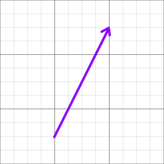
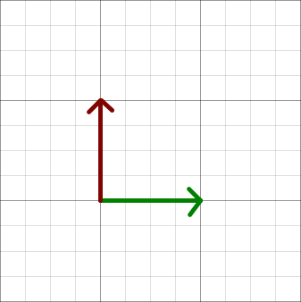

Linear Algebra
You probably already know a little linear algebra! You may have seen this type of puzzle online before:
= ? = ? = ?
Believe it or not, finding what apple, banana, and orange are is linear algebra!
I won't be focusing much on solving these types of puzzles, since they don't really deal too much directly to 3D rendering, but I like to tell people they know linear algebra despite not realizing it!
Vectors
A vector is an abstract concept in math that can be defined in a few different ways, but for our purposes, a vector is an ordered list of numbers.
For simplicity, I'll start with a 2D vector. They take they form $$\begin{bmatrix} x \\ y \end{bmatrix}$$ and point \( x \) units in the \( x \) direction and \(y \) units in the \( y \) direction.
For example, this is what the vector \( \begin{bmatrix} 1 \\ 2 \end{bmatrix} \) looks like:
Notice that if you start from the start of the arrow, the tail, and go to the tip, the head, you travel 1 unit in the \( x \) and 2 in the \( y \).
Some important vectors are called unit vectors. The 2D unit vectors are $$\begin{bmatrix} 1 \\ 0 \end{bmatrix}, ~ \begin{bmatrix} 0 \\ 1 \end{bmatrix}$$
Vectors alone can do ... not that much and that is where matrices come in!
Matrices
A matrix can also be defined in a few ways, but for now, it is best to introduce what they do rather than what they are.
Matrices can transform vectors; matrices can rotate, mirror, translate, and do a lot more to vectors!
I personally like to define matrices as "instructions", of sorts, telling us where the unit vectors go. By transforming the unit vectors, all the other vectors get transformed too.
For example, if you have a vector \( \begin{bmatrix} 1 \\ 2 \end{bmatrix} \), and want to scale it by 2, we can scale the unit vectors by 2, and so we take each unit vector, $$\begin{bmatrix} 1 \\ 0 \end{bmatrix}, ~ \begin{bmatrix} 0 \\ 1 \end{bmatrix}$$ scale them by 2, $$\begin{bmatrix} 2 \\ 0 \end{bmatrix}, ~ \begin{bmatrix} 0 \\ 2 \end{bmatrix}$$ then combine them into a matrix $$\begin{bmatrix} 2 & 0 \\ 0 & 2 \end{bmatrix}$$
Any vector transformed by that matrix, will also get scaled by 2.
Matrix transformation is done by matrix multiplication: $$\begin{bmatrix} 2 & 0 \\ 0 & 2 \end{bmatrix} \begin{bmatrix} 1 \\ 2 \end{bmatrix} = \begin{bmatrix} 2 \\ 4 \end{bmatrix}$$
Another example, if you want \( \begin{bmatrix} 1 \\ 2 \end{bmatrix} \) to be rotated by 30 degrees, we need to find there the unit vectors go.
The first unit vector, $$ \begin{bmatrix} 1 \\ 0 \end{bmatrix} $$ is pretty easy to find where it goes. This is just exactly the same trigonometry from before! Because this is a distance 1 from the center of some circle and already laying in the flat direction needed, rotating it by 30 degrees is just $$ \begin{bmatrix} \cos(30^{\circ}) \\ \sin(30^{\circ}) \end{bmatrix} = \begin{bmatrix} 0.866 \\ 0.5 \end{bmatrix}$$
The second unit vector, $$ \begin{bmatrix} 0 \\ 1 \end{bmatrix} $$ isn't too much harder to find out. We can imagine that it was on the flat direction needed, but then rotated 90 degrees + 30 degrees, and so $$ \begin{bmatrix} \cos(90^{\circ} + 30^{\circ}) \\ \sin(90^{\circ} + 30^{\circ}) \end{bmatrix} = \begin{bmatrix} \cos(120^{\circ}) \\ \sin(120^{\circ}) \end{bmatrix} = \begin{bmatrix} -0.5 \\ 0.866 \end{bmatrix}$$
So, to rotate any vector by 30 degrees, use this matrix $$\begin{bmatrix} 0.866 & -0.5 \\ 0.5 & 0.866 \end{bmatrix}$$
You may notice that $$ \cos(90^{\circ} + 30^{\circ}) = -0.5$$ and that $$ -\sin(30^{\circ}) = -0.5$$ which isn't a coincidence!
Similarly, you may notice that $$ \sin(90^{\circ} + 30^{\circ}) = 0.866$$ and that $$ \cos(30^{\circ}) = 0.866$$ which still isn't a coincidence!
It shouldn't be too hard to see that, to rotate any vector by any angle \( \theta \), just use this matrix $$\begin{bmatrix} \cos(\theta) & -\sin(\theta) \\ \sin(\theta) & \cos(\theta) \end{bmatrix}$$
Higher Dimensions
The idea of using the unit vectors to make a transformation matrix, applies to higher dimensions as well! You'll need as many unit vectors for as many dimensions you have. For example, in 3D, there are 3 unit vectors $$\begin{bmatrix} 1 \\ 0 \\ 0 \end{bmatrix}, ~ \begin{bmatrix} 0 \\ 1 \\ 0 \end{bmatrix}, ~ \begin{bmatrix} 0 \\ 0 \\ 1 \end{bmatrix}$$ which form larger transformation matrices.